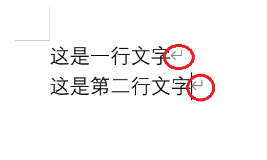

上一篇文章 《流程控制》中，我们了解了如何控制程序流程，使用的是 顺序、分支 和 循环，三个结构。
理论上，任何编程语言，了解了流程控制方法，就已经是入门了，而后面的主要是学习和掌握编程一些语言的特性。
今天，我们就利用已经掌握的编程技能，解决一个实际问题，怎么样，有信心吗？
问题来了
这是一个从实际当中抽取出来的例子，为了方便理解，做了简化处理，但解决问题的原理和方法和解决真实问题是差别的。
问题是这样的：
最近公司上线了一套打卡系统，出于成本考虑，选取了一个刷卡式打卡机。
每个员工都有一张员工卡，每天上班时在打开机上刷一下，就完成打卡动作。而打卡机会记录下卡号，和打卡时间。
第二天凌晨，打卡机会生成一份打卡记录，记录了员工卡号和打卡状态，存在一个文本文件中，例如 2022-06-20.txt，记录的就是 2022 年 6 月 2 日的打卡情况。
内容如下：
1 | AA,正常 |
第一列，是员工卡号，可以理解成员工编号，比如 AA、AB、CD 等，第二列是打卡状态，其中的状态有 正常、迟到 和 缺勤 三种，两列之间用 , 分隔。
每天早上，你需要从这份文件中统计出前一天有多少人迟到，有多少人缺勤，并把迟到和缺勤的员工编号罗列出来，交给人事部门。
程序设计
单纯从解决问题的角度上看，这个问题不难解决，人工处理可能更方便。
比如，从打卡机上拿到前一日打卡记录，在电脑上打开，或者直接打印出来，然后将状态为迟到和缺勤的编号标记或者记录下来，最后整理一下记录的结果就可以了。最多花费半个小时。
不过，作为一个日常固定工作很无聊，更麻烦的是投入了原本可以做其他更重要事情的时间。
因此我们更想让这个过程自动化，比如让程序帮助我们处理。
如果对一个问题有类似上面的思考，那么就离程序化解决不远了。
因为无论人工还是程序，对一个事情的处理流程或者逻辑是相同的，也就是 处理流程是链接现实与程序的桥梁。
这个解决或者理解问题的过程就是 抽象，最后得到的处理流程或者步骤就是 模型，这个分析过程我们称之为对需求的 建模过程 或者 分析过程。
是否已经发现，那些看似高大上的名词 和 说法，实际上只不过是很常规的处理方法而已，甚至我们已经不自觉地用上了。因此不必被那些感觉复杂的、高大的东西打击我们的求知心，它们都是纸老虎。
好了，我们分析了处理打卡记录的过程，现在就可以着手用程序实现了。
你可能会担心，不知如何下手？
其实，程序无论多么复杂，都是为我们服务的，都是我们思维的扩展，我们只需要自然而然地随着思路前行就好了。
步步为营
从上面的分析我们知道，首先需要拿到打卡记录文件，所以假设现在我们已经拿到了一个待处理文件（这里下载）。
回想下人工处理过程，我们需要将文件中的内容 输入 给我们的大脑，比如可以在电脑中用文本编辑器打开，也可以将文件打印到纸上；又比如给助理说一声 “念!”（如果有助理的话）。
可见要输入给大脑，有两种形式，通过视觉（用眼睛看）或者通过听觉（用耳朵听）。
如果需要计算机来出来的话，就简单多了，因为计算机特别擅长处理类似文本文件的信息或者数据，要知道计算机更确切地说是操作系统（Windows、Mac 或者 Linux 等等），就是建立在对文件的处理之上的。
打开文件
接下来的问题是如何让计算机读取这个文件。
本来，调用操作系统的处理能力是件很复杂的事情，但是编程语言为我们提供了大量地、方便地调用操作系统各种功能的方式，只需要几个简单的语句就可以了。
看这段代码：
1 | checkfile = open("2022-06-20.txt", "r", encoding='utf-8') |
open 这个内部方法，就是调用操作系统的功能，为我们打开一个文件名为 2022-06-20.txt 的文件，并将文件内容（表述不够严谨，仅为说明过程）存放在 checkfile 的 变量 中。
先不用纠结于代码本身，和什么是 变量。
我们先看看这个过程和我们人工处理有什么联系。
人工处理中，我们将内容打印出来或者用文本编辑器打开，此时如果我们把打印的纸弄丢了或者将文本编辑器不小心关闭了，我们就会失去对文本内容的控制和读取能力。
因此我们需要将打印的纸放在我们能找到的地方，或者将打开的文本编辑器放在桌面中央，以便我们能找到和处理。
对计算机而言，也是类似的，如果想让计算机处理一个东西或者数据，那么也需要将这个东西放在特定的地方。
现实当中，我们存放东西的方式和地方五花八门、形式多样，而对程序来说，就简单多了，这个地方就是 变量。
回过头来看上面的代码， checkfile 就是用来存放被打开文件内容的 变量。
如果写成这样：
1 | open("2022-06-20.txt", "r", encoding='utf-8') |
虽然文件是被打开了，但是，后面的处理将无法进行，因为我们找不到打开的文件放在哪里了，就像我们没有去取打印出来的文件，从而找不到他们一样。
因此，需要记住一个基本处理方法：凡是需要处理的内容，都需要将其存储在变量中。
关于变量的话题，足以另写一本书，现在我们只需要知道 用变量来存储需要进一步处理加工的信息 就可以了。
读取文件
现在我们得到了文件内容，接下来就是如何处理。
人工处理时。我们要逐行查看文件内容，程序也是一样的。
既然要逐行处理文件内容，是否可以想到我们在《流程控制》中介绍的一个结构呢？
对了，就是 循环，看下面代码：
1 | checkfile = open("2022-06-20.txt", "r", encoding='utf-8') |
读者可以在 Python 的交互式编译环境(命令行中 输入 python 回车 可进入)中试试。
如果开启的命令行，不在要打开的文件所在的目标，执行代码将会提示找不到指定的文件。
不要慌张，有两种处理方法：文件找不见的问题（bug） 是编程问题中最常见问题之一，如果养成了检查文件存在性问题的习惯，就离高手不远了
如果一切正常，这段代码将在屏幕上打印文件中每行的内容。
如何做到的呢？
在《流程控制》中，我们在讨论 循环 结构时，了解了可循环的序列有：数组，迭代器等等。
而这里我们打开的文件 checkfile 就具备迭代器 的功能。
当将它放在 循环结构 中，就可以被迭代处理，而每次从其中获得到的是文件中的一行数据。
如果不是特别理解，我们换一种写法：
1 | checkfile = open("2022-06-20.txt", "r", encoding='utf-8') |
区别是，多了一句 checkfile.readlines()，意思是对 checkfile 这个 变量（更确切的应该叫 对象），执行 readlines 方法，将获得一个数组，数组 中每个元素为文件中的行。然后对数组进行循环，并将每次循环的内容打印出来。
所以这两段代码的效果是一样的，不妨可以试试。
提取数据
在上面代码的循环体内，我们只是简单打印了每行的内容，而实际上，我们需要更复杂一些的处理。
想想人工处理的过程，当看到一行文字之后，识别出员工编号，和其后的状态信息，如果是 迟到 或者 缺勤，就用一个记号笔或者特殊符号记录一下，或者将其抄录到一个新的文件里。
程序处理也一样。
如何让程序有判断能力呢？没错，就是用 分支结构。
在进行之前，我们需要对每一行的数据做一下说明和处理。
文件文件中的一行，会被程序处理成一个字符串，什么是字符串呢？简单理解成是一串文字，更确切地说是一串字符。
字符 可以是一个字母，数字，或者我们的一个汉字，在 Python 中，凡是可以用 utf-8 编码的信息都可以作为字符串。
对于程序来说，字符串 是一种基本 数据类型，比如 数字 也是一种基本数据类型，数字又可分为 整数、浮点数（简单理解为带小数的数字）等等。
由于 字符串 很常用，所以各种编程语言，都提供了多种、方便易用的字符串处理方法。比如合并、分割、查找等等，后面我们再逐步讲解字符串的其他特性。
回过头来，既然一行文本是一个 字符串，那么我们就可以利用字符串的特性来做处理。
我们发现，每一行的数据都是由 员工号、逗号、状态组成，我们感兴趣的是状态，如何提取到状态信息呢？
我们用字符串的 split 方法，它可以将 字符串 按照特定的 字符 或者的 字符串 分开。
比如我们的一行信息是：AA,迟到，用 split 按逗号分割的结果就是 AA 和 迟到。
如果一个字符串是 1-2-3-4,按照 - 来分割，结果就是 1，2，3，4。
那么代码如何写呢？
1 | # 省略了打开和for 循环代码 |
这样一行的数据就被拆分成编码和状态了，它们被存储在 info 中，用 数组 的形式，比如 ['AA', '迟到']。关于数组，可参考 Python 数组。
现在可以用一个分支逻辑，做进一步处理了：
1 | # 省略了打开和for 循环代码 |
info[1]表示提取info这个数组中的第二个元素，即状态pass是一个关键字，表示一个空语句，主要用来代替还未完成 或者 省略的代码，而使程序的结构完整。有时也会写成...，作用是一样的
分门别类
在分支语句中，我们需要对符合条件的数据做统计，要得到迟到、缺勤的人数，以及迟到和缺勤的员工编号。
人数比较容易，设置一个 变量，符合条件就加一就可以，代码如下：
为了分别统计迟到和缺勤的人数，就设置两个变量，late_count 和 absence_count，分别对两种状态进行判断即可：
1 | late_count = 0 # 迟到人数统计 |
接下来，需要记录不同状态的人员编号，与统计数量类似，我们分别为两种状态定义存储 变量,因为需要存储多个值，所以我们需要用 数组：
1 | late_count = 0 # 迟到人数统计 |
- 和定义统计变量类似，数组变量只需要把初始值设置为
[]就可以 数组的append方法用于添加元素
关于 Python 的变量：
Python 中的变量很灵活，一个变量可以用来记录 数字，字符串，也可以是被打开的文件。
Python 怎么能区分变量的类型呢？主要是通过变量所代表的值来判断的。存入数字就是数字类型，存入数组就是数组类型。
虽然这样对我们编程很方便，但也会因此引入一些错误，比如针对数字类型的方法，被传入了字符串或者其他类型的数据，就可能出错。
所以尽量不要用一个变量在存储不同的类型的值。
现在对一行信息的处理就完成了，将这段代码集成到整个代码中：
1 | checkfile = open("2022-06-20.txt", "r", encoding='utf-8') |
细心的读者会发现，集成在一起时，原来定义记录人数和员工编号的变量被放在了 for 循环外边。
为什么呢？
是因为这部分是定义，也叫 初始化，就像我们人工处理前拿到一张白纸，用来记录统计结果一样。
如果写在循环里，就相当于每处理一行，拿一张新纸，那到最后就成了猴子扳苞谷了。
所以这里有个编程原则：先声明，再使用，就是说我们需要事先规划好需要用的东西，再去使用，而不是反过来。
在实践中，不见得都要如此严格，但，当我们遇到需要声明的时候，就将其写在处理的前边，以及尽可能将需要用到的声明集中起来，就像上面这段代码一样，将记录人数和员工编号的变量，统一声明在处理之前。
输出结果
在 for 循环外边，将统计的结果打印出来即可得到统计结果：
1 |
|
这里对 print，稍作扩展说明。
我们知道 print 可以在命令行屏幕上打印一行文字，如果我们给其提供多个内容会怎么样？
比如 print('a', 'b', 'c', 'd')。
如果尝试一下，就会看到，打印出来的结果是： a b c d。不难发现，这些内容被连成了一个串，并且用一个 空格 将它们分隔。
这就是 print 的另一个特点：会将多个参数用空格串连起来一并输出。
此外 print 方法比较智能，它会将不是 字符串 的变量转化为字符串的形式，比如一个数组 [1, 2, 3, 4] 会被转化为: [1, 2, 3, 4] 来显示。
这个将非字符串转化为字符串的过程被称为 序列化。
现在将代码整理起来试试吧。
出师不利
如果读者尝试执行了我们的处理过程，在一切正常的情况下，会发现，统计的结果都为 0！
程序都能好好地运行，文件也没错，而且每一行都能正常读取，就是不出结果，这是怎么回事呀？
这样的问题在编程的道路上很常见，正是这样的一些莫名其妙的问题，导致大多数学习者半途而废。
实际上这些 看起来莫名其妙的问题，背后都有其必然原理。
我们来分析一下。
根据主观判断，问题很有可能出在分支判断上，如果分支判断出了问题，那么分支里的逻辑就不会被执行。
在编程过程中，这种主观分析判断很重要，遇到问题不要慌，先思考和分析一下。
这样的简单思考往往能解决很多问题，而且很多问题并非想象得那么可怕。
我们来检查一下判断的部分。
我们从读取的行信息中，分离出了编号和状态，并对状态进行了判断，除非是读取的状态不对，才能导致判断失败。
于是，我们可以将其中的部分单独拿出来，检查一下，这种将程序的一部分单独拿出来检查的工作称为 单元测试。
1 | # 初始化 |
我们可以在交互式编译模式中执行一下，发现打印的是 Yes，这说明判断逻辑没错。
得到了新证据之后，我们就有了新的调查方向，那就是 从文本中读取的行信息是否有问题。
虽然这种怀疑看似很无聊，但毕竟我们并没有仔细检查文本中行的内容是吧，别放过任何一个可疑点。
我们就来检查一下文本中的行数据，因为是检验，只需要提取其中一行就好：
1 | checkfile = open("2022-06-20.txt", "r", encoding='utf-8') |
readline方法每次只获得一行内容，每调用一次，就会将读取指针指向下一行，因此读取时不必指定要读取的行号
执行一下，结果将大出所料！打印出来的竟然是 No！
看来问题就在这里，那为什么呢？
我们换种比较方式：看看读取到的内容和我们认为的内容长度是否一致。
别惊讶，这是因为计算机看到的世界和我们所看到的世界是有差别的，所以这么检验一下很合理吧哈哈。
1 | print(len(l)) |
len是内部方法，可用来获取字符串的长度 或者 数组的元素个数
这回我们发现了，原来读取到的文本和我们认为的不一样长，那么读取到的文本到底是什么呢？
其实多了一个 回车符。
电脑中在记录文件时，有很多用于辅助的不可见字符，比如空格、制表符(Tab)、回车符 等等，通过这些特殊的符号，才能让文档显示成我们能够看懂的样子，比如在 Word 中，我们常常看到这样的符号：

注意圈出来的地方，它们就是回车符，当电脑显示一段信息时，当遇到回车符，就会换行显示。
了解了这一点，我们就知道为什么看上去一致的字符串，实际上不一致了。
如何解决这个问题呢？
有种很直接的方法，就是去掉每行最后一个字符，这样就能正常比较了。
具体操作可以是这样：l = l[:-1]，意思是从字符串中截取从第一个到倒数第一个但不包含倒数第一个之间的字符，之所以可以这么操作，是因为字符串实际上就是字符的数组。
关于更多的字符串或者数组的操作，我们后面再展开。有兴趣的读者也可以参考 python 数组操作 自行学习
不过这个方法存在一个问题，就是最后一行，可能没有换行符，这样就会去掉有用的字符，从而无法正确判断。
这个错误称为 边界错误，是编程中常常遇到的问题，因此在测试领域中，有个测试项 —— 边界测试，是专门针对这种问题的，读者可以多留意一下
更好的解决方法是，去除掉字符串尾部的 空白字符，而 回车符 就属于空白字符。
因为这种操作太常见，所以 Python 将其作为字符串类型数据的内置方法 strip，意思是对字符串进行修剪，去除掉两边的空白字符，比如：
1 |
|
关于修剪的更多用法可以参见 Python String strip
有了这个方法，就不用担心多去除有用的字符了，我们的代码改为：
1 | # ... 省略其他代码 |
再运行一下，是不是就能得到想要的结果了。
锦囊妙计
在这一节实践训练的结尾，需要提醒各位读者一件事儿。
我们上面的代码中，即使能正常运行，得到了想要的结果，也存在一个安全隐患。
那就是 没有关闭文件。
我们只是打开了需要处理的文件，在程序处理完成后，并没有关闭文件，就像我们在电脑中打开一个文件，忘记关闭了，或者没有及时处理掉打印处理的文件。
虽然在程序结束之后，被打开的文件最终会被系统关闭，但是这样的并不安全，而且如果当有其他程序共享这个文件时，可能使其他程序出错。
还记得在第一篇文章中提到的一个问题吗？那个问题就是因为没有及时关闭文件引起的。
锦囊妙计来了：
我们 要养成对不再使用的资源及时关闭的习惯。
对于打开的文件，直接调用 close 方法就将其关闭了，比如我们前面打开的文件这样关闭：checkfile.close()。
另外，值得高兴的是，Python 为我们提供了更方便的功能，可以自动关闭打开的资源，只需要使用关键字 with 即可。看代码；
1 | with open("2022-06-20.txt", "r", encoding='utf-8') as checkfile: |
在 with 构造的代码块中，打开的文件被分配给了变量 checkfile，只要在代码块内，都可以使用。
而一旦离开代码块，被打开的文件就会立即关闭。
是不是方便多了。
总结
今天我们用学到的流程控制方法解决了一个实际问题，学习了如何处理一个文本文件，并且了解了程序设计、编码、测试方面的知识，最后还对文件处理中遇到的问题，做了说明。
通过今天的实践练习，期望读者能更好地体会程序是如何帮助我们解决问题的，实际上解决问题的并不是程序，而是我们自己，更确切地说是我们分析、思考问题的方法和能力。
完整代码和材料文件可以在这里下载，期望对你所帮助。
笔者的水平有限，文章中难免出现各种错误和问题，恳请读者不吝批评、指正。十分感谢！
比心！